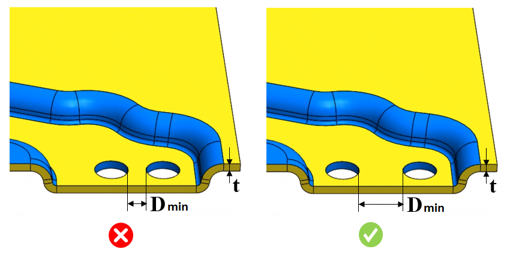

穴間距離と板厚の比率は、ユーザーが指定した値の範囲内である必要があります。
2つの穴の間の距離は、材料厚さの少なくとも2倍である必要があります。穴同士が近すぎると、材料の変形を引き起こす可能性があります。十分な穴間距離を確保することで、金属の強度を維持できます。
最小穴間距離は、板厚の2倍とする必要があります。
ユーザーは、材料データベースから製造材料を設定し、それに対応する穴間距離と板厚の比率を設定できます。DFXは、2つの穴間の距離（最小点間距離）を識別し、この距離を事前に構成された板厚比率の値と比較します。必要に応じて、デフォルトで構成された値を編集することができます。
ルールUIでは、材料の一覧が材料データベースから読み込まれます。ユーザーは材料およびそれに関連する値を設定できます。材料グループ内では、材料グレードはアルファベット順に並べ替えられます。材料グループが選択されている場合、DFMProは材料グループ全体で一貫した比率を維持したまま解析を実行します。

ここで、
Dmin = 穴間の最小距離
t = 板金の板厚
穴同士の点間距離に基づいて距離計算が行われます。
シンプル穴のみがサポートされます。